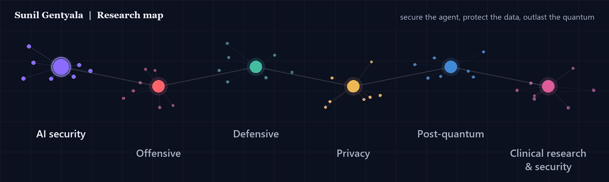

ResearcherPractitionerWriter
Securing AI systems, and the cryptography they will depend on.
I am Sunil Gentyala, Lead Cybersecurity and AI Security Consultant at HCLTech, based in Dallas, Texas. I research how AI agents are attacked and defended, how data stays private around them, and how enterprises migrate to post-quantum cryptography. I publish in conferences, journals, whitepapers and the trade press.

Focus areas
AI security
Agentic AI, Model Context Protocol and LLM security: how autonomous systems get attacked, and how to govern them before they act.
Explore →Offensive security
Adversarial testing of LLM, RAG and agent systems, identity abuse research, and open tooling that finds the flaw before an attacker does.
Explore →Defensive security
Zero trust, threat hunting, detection and governance frameworks that hold up under pressure, mapped to MITRE ATLAS and NIST CSF 2.0.
Explore →Privacy engineering
Keeping sensitive data out of places it should never reach: DLP for LLM prompts, local-first AI, and PII-aware document pipelines.
Explore →Post-quantum cryptography
Hybrid ML-KEM and ML-DSA migration, harvest-now-decrypt-later exposure, and the enterprise gaps that appear during the transition.
Explore →Clinical research and security
Quantum and machine-learning methods for clinical risk modelling, and the privacy and security of the health data behind them.
Explore →
Recent writing
Your Enterprise Doesn't Need Six BOM Programs. It Needs One Evidence Graph
MCP Fixed Secret Handling. URL Elicitation Moved the Phishing Risk Into the Browser
When the Prompt Becomes the Payload: A Practical Pen-Testing Guide for GenAI, LLM and RAG Applications
4 Million Fake Applications and One Blind Spot: A SOC Playbook for OAuth Client ID Spoofing
The Ghost Applications: How OAuth Client ID Spoofing Enumerates Microsoft Entra Accounts Without a Successful Sign-In
Latest research
Post-Quantum Security Framework for Model Context Protocol Using ContextGuard
Sunil Gentyala, P. Krishna Sunil, Vamshi Lande, Akhila Kasturi, Suresh Kumar Darisi, Ruhisulthana Shaik
Agentic Security Validation Framework for Retrieval-Augmented and Tool-Enabled Large Language Model Systems (ARGUS)
Sunil Gentyala, N. Sudhakar Reddy, Kothapalli Chaitanya Deepthi, Pathapati Saroja, Kammara Venkatarangaiah Achari, Ruhisulthana Shaik
A Zero-Trust Supply Chain Security Framework for Model Context Protocol-Based AI Systems
Sunil Gentyala, Ch. Srinivas, Raghu Dhumpati
A Unified Mathematical Framework for Secure Multi-Agent Large Language Model Pipelines (TRACE-MAS)
Sunil Gentyala, Y. Geetha Reddy, Manasa Pendyala, Vishnu Gatla, Sundarigari Manoj, Ruhisulthana Shaik